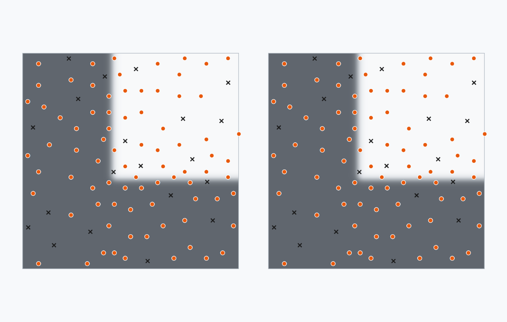

Research project · Active learning and Bayesian optimization
Where to measure next
Gaussian-process models help us decide where to measure next by predicting both the outcome and
its uncertainty. But that uncertainty also depends on the boundaries of the region we can explore. A rule that
selects the most uncertain location can therefore favour edges and corners, regardless of the measured values.
In three papers, we study why this happens, how to correct it when learning a whole function,
and what it means when searching for the best experimental setting.
The observation
Measure where the model is most uncertain
measurements near the boundary
The same rule with our geometric weight
measurements near the boundary
starting pointschosen pointsnewest point
Both rules start from the same five locations (yellow) and select 20 additional points. With
fixed model settings, neither uses the measured values. The geometric weight changes the spatial preference of
uncertainty-based sampling.
Details
Gaussian process with a Matérn-5/2 kernel and lengthscale 0.268 on the unit square, with negligible noise
(10−8). The score on the left is the posterior standard deviation σ(x); on the right it is
gN(x) · σ(x), where gN is the geometric weight from our optimization paper for N
measurements. Blue shows the score, and the next point is the best of a 61 × 61 grid. The five starting points
are a scrambled Sobol sequence. The shaded band is closer than 0.05 to the boundary
and occupies 19 % of the domain's area.
The explanation
Near a boundary, a location has fewer neighbours
Measurements reduce uncertainty in their neighbourhood. Near the boundary, part of that
neighbourhood lies outside the experimental domain. Averaged over random measurement locations, uncertainty is
therefore higher near edges and corners.
less uncertain more uncertain
Individual measurement sets can obscure this pattern; averaging reveals the systematic effect.
Details and settings
Gaussian process with a Matérn-5/2 kernel and noise variance 0.0025. We average the posterior variance over
64 random measurement sets and the eight symmetries of the square. The map shows the square root of this average,
expressed in standard-deviation units. For one set, the map is the posterior standard deviation of that set, and
the readout compares with its average over the domain.
The influence of a measurement fades with distance; the circle has the radius of the lengthscale and is not a
hard limit. The axes can be read as two experimental settings, such as temperature
and pressure. The chart shows the uncertainty along the dashed line through the marker.
When learning a whole function, we need measurements that support accurate predictions
across the domain. When optimizing, we want to find the best setting. These different goals change how we should
respond to a preference for the boundary.

Experimental design
Learning the whole function
With fixed model settings, uncertainty-based sampling ignores the measured values. We combine a geometric
correction for boundary bias with a reconstruction warp that uses those values to guide subsequent
measurements.
A preference for the boundary can help or hinder the search for an optimum. We compare three ways of
weighting exploration to understand how this preference changes the search.
The uncertainty of a Gaussian process is larger near the boundary of the domain. We explain why, and show
where variance maximization, NIPV and EPIG place measurements because of it.
Correcting Boundary Bias and Observation Independence in Bayesian Experimental Design
Jarl, Sjölund, Scragg, Bånkestad. 2026.
For learning a function over its whole domain. A precomputed weight reduces the boundary preference, and a
warp of the input space makes the next measurement depend on the measured values.